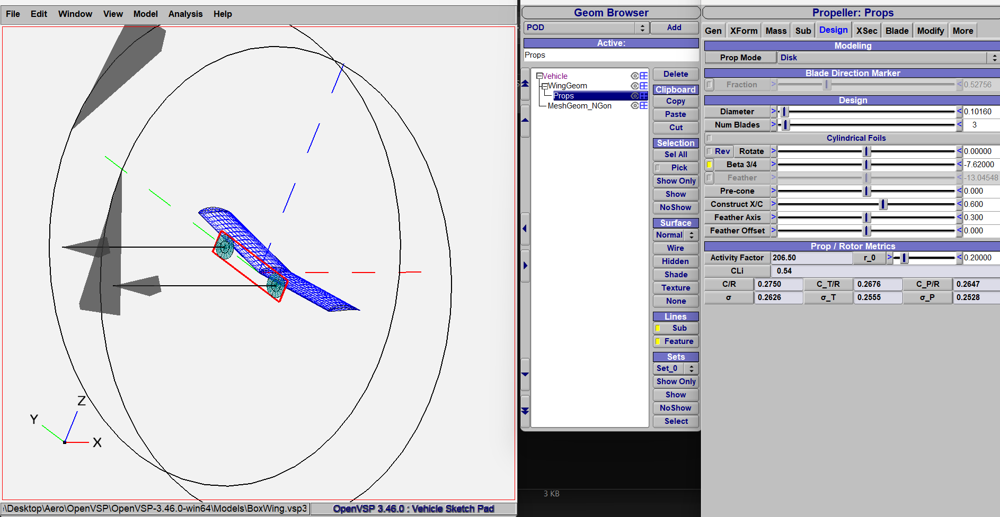
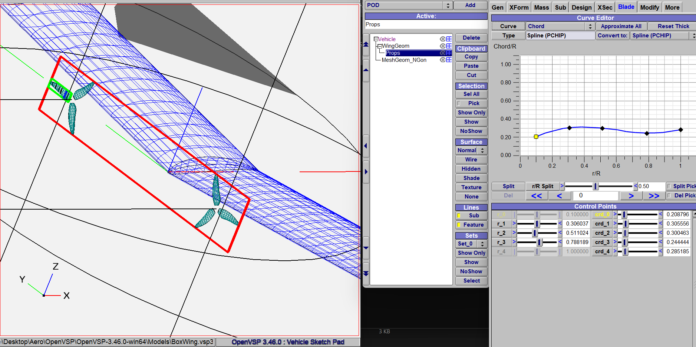
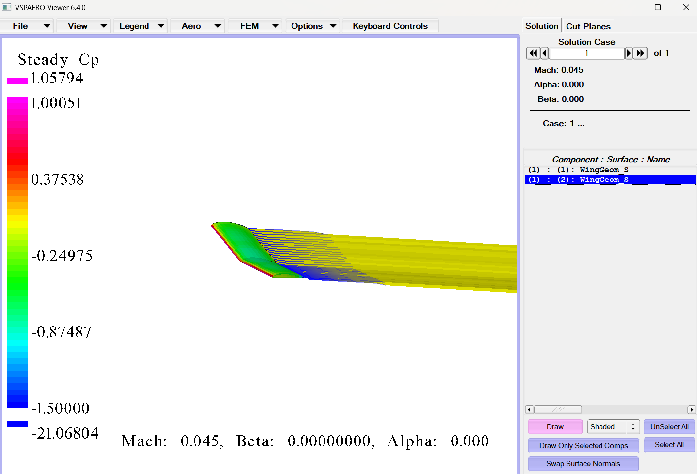
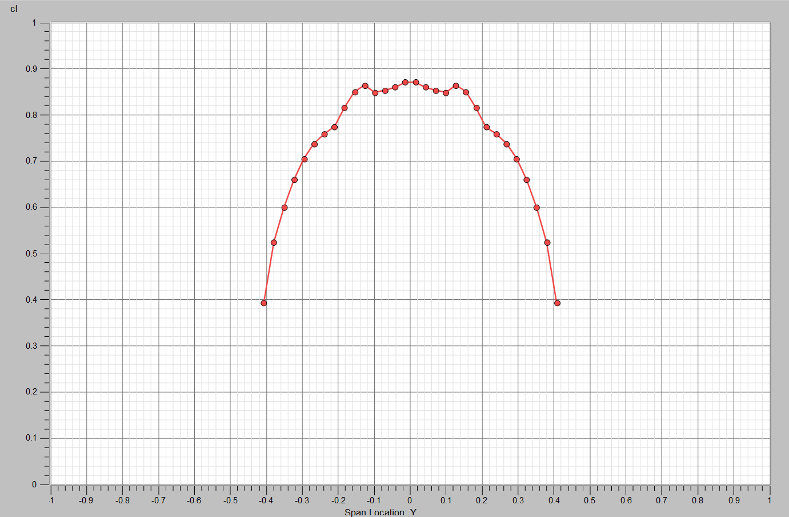
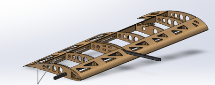
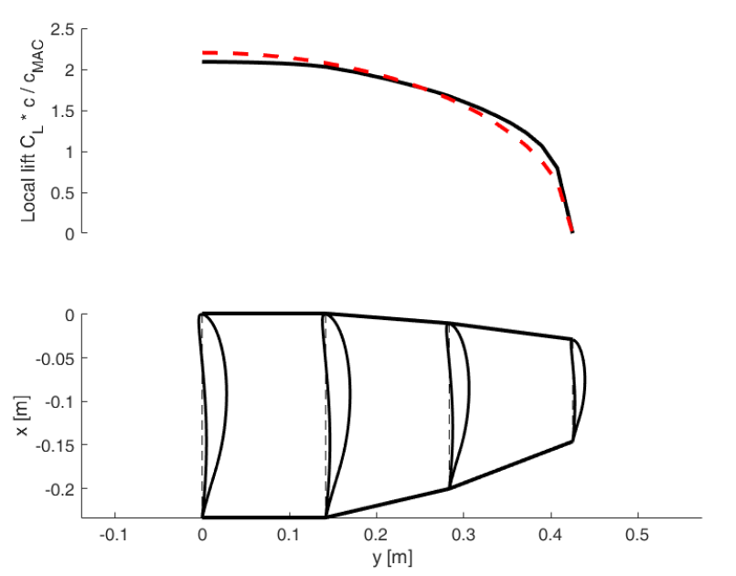
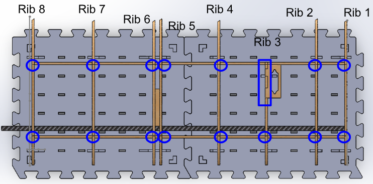
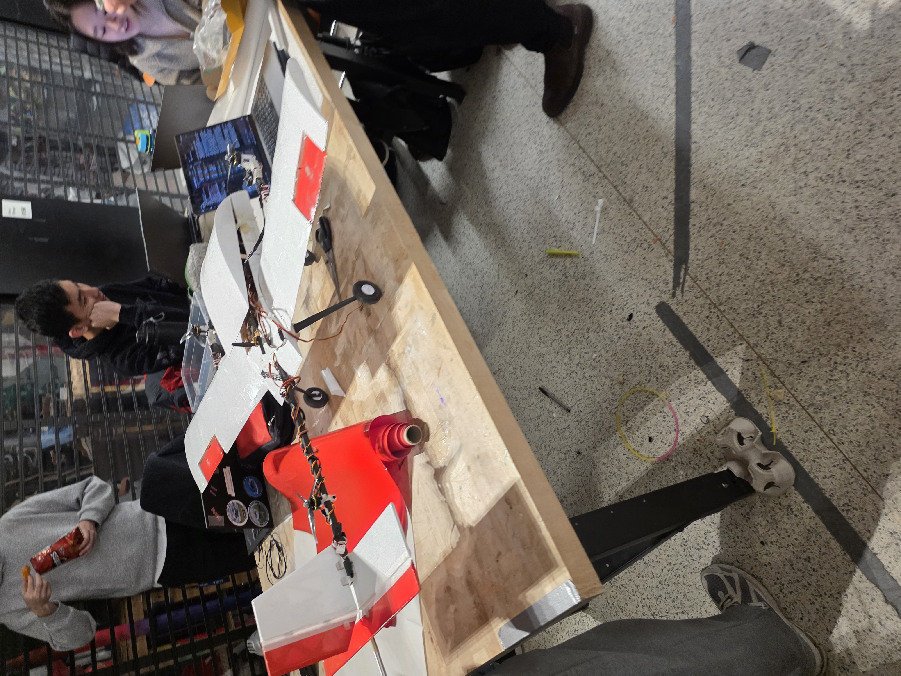
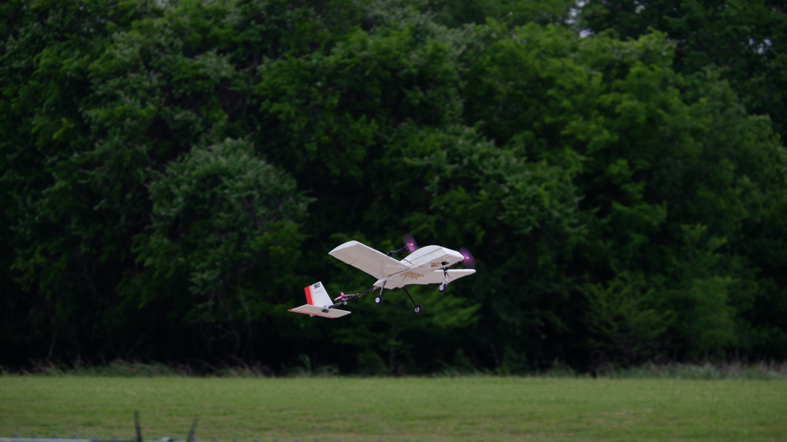

UTAT Aerodynamics
I worked on the aerodynamics subteam for the University of Toronto's Aerospace Team (UTAT) SAE, contributing to the design, analysis, manufacturing, and testing of a VTOL aircraft (specifically the wings) for the SAE Aero Design Advanced Class competition. The aircraft achieved 4th on flight and 3rd in the design report at the 2026 international competition in Texas.
My work focused primarily on aerodynamic analysis and design support using OpenVSP, VSPAero, XFLR5, and SolidWorks. I investigated prop wash effects, wing-propeller interactions, preliminary aerodynamic configurations, and the use of OpenVSP as a practical aerodynamic design workflow.
Technical Skills
OpenVSP & VSPAero Development
A major portion of my work involved researching OpenVSP and VSPAero as aerodynamic analysis tools. I modeled aircraft geometry, wings, and propeller systems to investigate aerodynamic behavior and estimate prop wash effects on lifting surfaces.
This involved experimenting with geometry setup, propeller modeling, wake assumptions, spanwise aerodynamic outputs, and convergence settings. I also cross-checked results with XFLR5 to determine whether outputs were physically reasonable.




Troubleshooting & Validation
Simulation outputs were not always physically reasonable, especially during early stages of setup and testing. Troubleshooting involved identifying geometry issues, paneling problems, wake assumptions, and solver configuration errors.

Preliminary Wing Design
I contributed to preliminary aerodynamic design discussions involving wing configuration, box-wing concepts, airfoil considerations, manufacturability, and aerodynamic tradeoffs for VTOL integration.
I am also currently reviewing the team’s Python-based multidisciplinary design optimization workflow used during preliminary aircraft design.


Manufacturing & Assembly
In addition to aerodynamic analysis, much time was spent on manufacturing and aircraft assembly.
This work helped connect aerodynamic design decisions with practical manufacturing constraints and aircraft integration challenges.


Aircraft & Competition
The final aircraft integrated aerodynamic design, manufacturing, propulsion, structures, and controls into a competition-ready platform. Working on the aircraft provided experience across the complete engineering workflow: design, analysis, fabrication, testing, troubleshooting, and iteration.


Flight Testing
Flight testing connected aerodynamic predictions with real aircraft behavior. The first successful runway takeoff and landing provided valuable insight into aircraft stability, performance, and integration.
My Contributions
My primary contributions included R&D on OpenVSP/VSPAero as an aerodynamic tool, modeling wings and propellers to investigate prop wash interactions, validating results using XFLR5, supporting preliminary aerodynamic design decisions, and contributing to manufacturing and assembly.
I also worked with SolidWorks for component-level CAD tasks and contributed to physical fabrication through 3D printing, laser-cut preparation, assembly, gluing, and Monokote application.
Key Takeaways
This team strengthened my understanding of aerodynamic analysis, aircraft design workflows, manufacturing, integration, and more.
It also demonstrated how aircraft design requires coordination across aerodynamics, structures, propulsion, CAD, manufacturing, and testing rather than isolated calculations. I will continue to work to develop an even better plane for next competition.